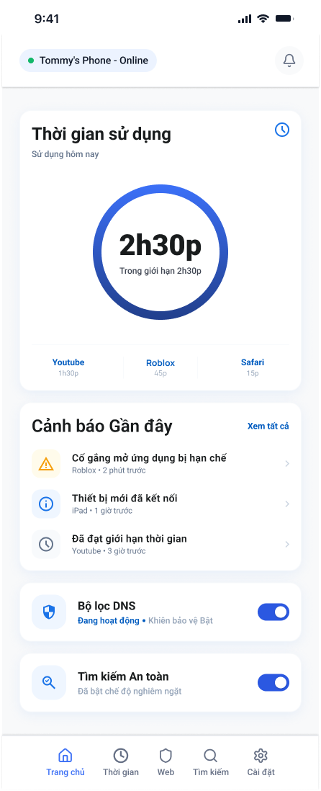
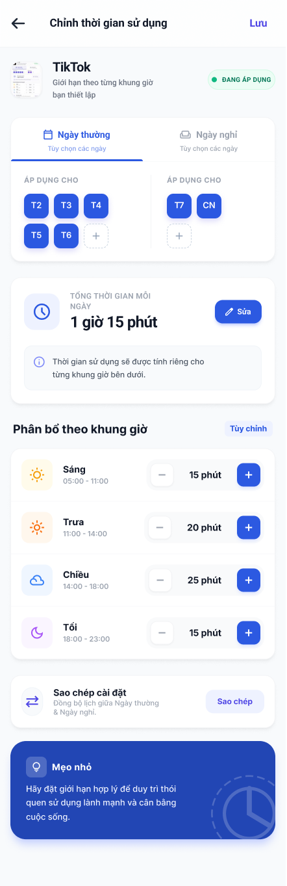
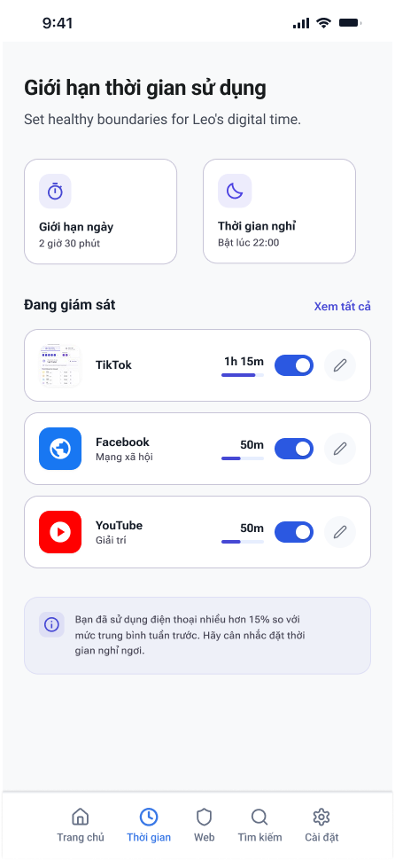
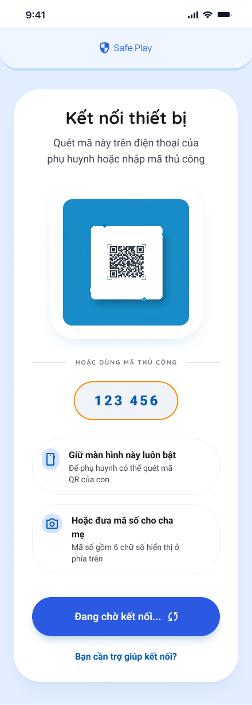
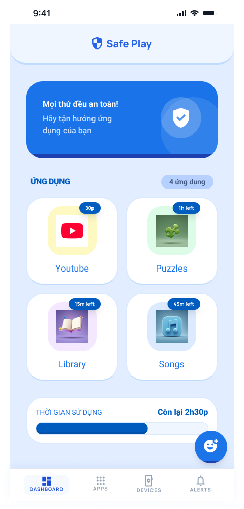
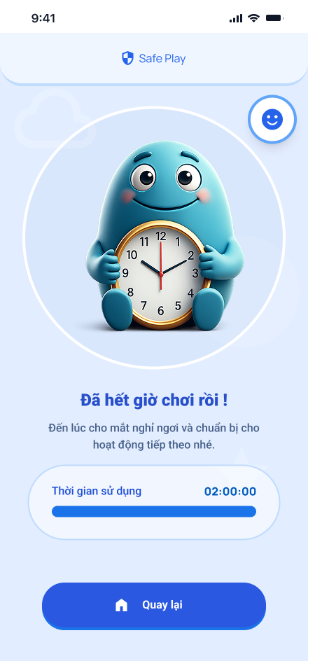

Luồng Phụ huynh (Parent Flow)
Thiết kế Dashboard trực quan, cài đặt thời gian và cấu hình thiết bị giúp phụ huynh thao tác nhanh chóng chỉ trong vài bước.
Ứng dụng quản lý thiết bị và thời gian sử dụng màn hình của trẻ nhỏ, mang đến trải nghiệm trực quan cho cha mẹ và giao diện thân thiện, dễ hiểu cho con trẻ.

Tổng quan dự án
KidGuard được thiết kế nhằm giúp các bậc cha mẹ dễ dàng thiết lập giới hạn sử dụng thiết bị, quản lý danh mục ứng dụng an toàn mà không gây cảm giác gò bó hay căng thẳng cho trẻ nhỏ.
Phạm vi thiết kế
Đóng góp của mình
Thiết kế Dashboard trực quan, cài đặt thời gian và cấu hình thiết bị giúp phụ huynh thao tác nhanh chóng chỉ trong vài bước.
Xây dựng màn hình trẻ em với hình ảnh vui tươi, giải thích rõ ràng số phút chơi còn lại và trạng thái khóa khi hết giờ.
Sử dụng màu xanh dương tạo sự tin cậy kết hợp tone vàng dịu và bo góc mềm mại để tính năng kiểm soát không bị cứng nhắc.
Vấn đề
Mục tiêu giải pháp
Quy trình thiết kế
Khảo sát nhu cầu quản lý thời gian, lọc app và ghép đôi máy.
Tạo màn hình con trực quan, hiển thị rõ app an toàn và trạng thái khóa.
Sắp xếp cài đặt lịch trình theo ngày trong tuần và khung giờ khoa học.
Áp dụng màu sắc ấm áp, card bo góc lớn và icon minh họa thân thiện.
Showcase Màn hình
Dashboard cung cấp cái nhìn tổng quan về thời gian dùng màn hình trong ngày, mức độ sử dụng từng app và trạng thái bảo vệ.




Giao diện phía trẻ em sử dụng hình ảnh gần gũi để hiển thị các ứng dụng được phép dùng, thời gian còn lại và gợi ý hoạt động ngoài trời khi hết giờ.


Thiết kế Giao diện
Mọi tính năng được tối ưu để tạo cảm giác đồng hành cùng cha mẹ và con cái.
Nhìn lại dự án
KidGuard giúp mình khám phá sâu sắc cách biến các tính năng kiểm soát phức tạp thành trải nghiệm trực quan, ấm áp và gần gũi cho cả người lớn lẫn trẻ em.